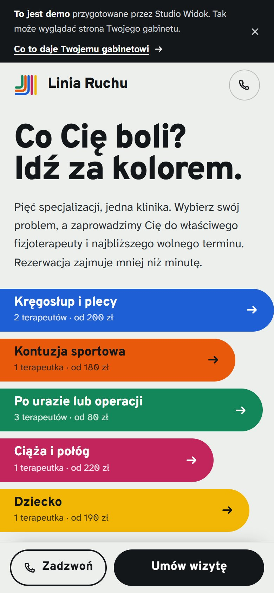

Scena 1Środa, 16:00. Pacjent nie przyszedł i nie dał znać.
Co zmienia stronaPacjent dostaje SMS z przypomnieniem dzień przed wizytą i sam zmienia termin bez dzwonienia, zamiast milczeć. Ty widzisz wszystko w jednym kalendarzu.
Dla gabinetów i klinik fizjoterapii
Stawiamy stronę z rezerwacją online i kalendarzem dostępności. Pacjent wybiera swoją dolegliwość, widzi Twoje wolne terminy i rezerwuje o każdej porze, także o 23:00. Gotowe w około 14 dni.
Rozmowa trwa kilkanaście minut i niczego nie zaczyna: dopiero po akceptacji projektu płacisz za wdrożenie.

Z Twojego gabinetu
Scena 1Środa, 16:00. Pacjent nie przyszedł i nie dał znać.
Co zmienia stronaPacjent dostaje SMS z przypomnieniem dzień przed wizytą i sam zmienia termin bez dzwonienia, zamiast milczeć. Ty widzisz wszystko w jednym kalendarzu.
Scena 2Trzy nieodebrane połączenia, a Ty masz ręce zajęte pacjentem.
Co zmienia stronaRezerwacje przyjmuje strona, o każdej porze. Pacjent wybiera Twój wolny termin i dostaje SMS z potwierdzeniem, a Ty leczysz.
Scena 323:12. Ktoś wpisuje w telefonie „ból w krzyżu” i trafia do konkurencji albo na portal.
Co zmienia stronaWłasna strona z osobnym wejściem na każdą dolegliwość, którą leczysz, i rezerwacją w mniej niż minutę. Bez portalu i bez prowizji.
Scena 4Własna strona od miesięcy czeka na liście „kiedyś”, bo nie ma kiedy.
Co zmienia strona2–3 godziny Twojej pracy: podajesz godziny, usługi i zdjęcia. My piszemy teksty, stawiamy stronę i wizytówkę Google i ustawiamy kalendarz.
Skąd pacjenci
Większość osób, które szukają fizjoterapeuty, robi to z telefonu, po pracy. Umówi się tam, gdzie może to zrobić od razu.
„Ból krzyża”, „kolano po biegu”, „barki od biurka”. Każda dolegliwość, którą leczysz, ma własną stronę i własny tytuł w wyszukiwarce.
To Twoja strona, a nie lista kilkudziesięciu specjalistów z portalu. Pacjent od razu widzi, kto go przyjmie i kiedy.
Wybiera termin z Twojego kalendarza i dostaje SMS z potwierdzeniem. Ty widzisz rezerwację w panelu, a o zmianach wiesz od razu.
Jak to działa
Co dostajesz

Cena
Dopiero zaczynamy i szukamy pierwszych gabinetów, z którymi zbudujemy swoje realizacje. Dlatego pilotaż: pełny pakiet w niższej cenie, a w zamian prosimy o opinię i zgodę na pokazanie strony. Wolne miejsca: 3
Dla terapeuty prowadzącego własną praktykę
2 900 zł 1 900 zł wdrożenie
149 zł miesięcznie utrzymania, w tym 200 SMS-ów dla pacjentów
Dla kliniki i zespołu terapeutów, osobny grafik każdego
4 499 zł 2 999 zł wdrożenie
299 zł miesięcznie utrzymania, w tym 650 SMS-ów dla pacjentów
Pilotaż jest już pełny. Zostaw dane, a przygotujemy aktualną ofertę.
Bezpiecznie
Dane o zdrowiu są chronione szczególnie surowo, więc zbieramy tylko to, co potrzebne do umówienia wizyty: imię, telefon i termin. Wywiad, badanie i historię choroby zostawiasz tam, gdzie prowadzisz je dziś. Formularz prosi pacjenta, żeby nie opisywał dolegliwości, a powód odwołania wybiera z listy.
Zanim zdecydujesz
Portal pokazuje Cię obok kilkudziesięciu konkurentów, a strona jest Twoja i prowadzi pacjenta tylko do Twoich terminów. Jeśli masz stronę, sprawdzamy na rozmowie, czy da się dołożyć rezerwację do niej, czy lepiej zbudować nową. Mówię to wprost.
Telefon zostaje, a na stronie jest pasek „Zadzwoń”. Rezerwacja online przejmuje tych, którzy szukają wieczorem i rano już nie zadzwonią, bo umówili się gdzie indziej.
Po Twojej stronie to około 2–3 godzin: rozmowa na start, materiały (zdjęcia, godziny, usługi), jedna runda uwag do tekstów i projektu oraz próbne rezerwacje. Resztę robimy my.
Hosting, domena (także jej coroczne odnowienie), certyfikat SSL, aktualizacje, naprawa błędów i do godziny drobnych zmian miesięcznie. W cenie są też SMS-y dla pacjentów: 200 miesięcznie w Individual i 650 w Team, każdy kolejny kosztuje 17 gr netto. Pierwszy miesiąc utrzymania jest w cenie wdrożenia.
Nie ma okresu minimalnego. Rezygnujesz e-mailem, w każdej chwili. W ciągu 7 dni dostajesz pliki strony i systemu rezerwacji oraz dostęp do domeny i wizytówki. Całość możesz przenieść na własną infrastrukturę, na własny koszt. Opłacony z góry miesiąc nie jest zwracany, ale system działa do jego końca.
Nie. Domenę kupujemy na Twoje dane i odnawiamy w ramach utrzymania. Pacjent nie zakłada konta ani nie pobiera aplikacji, a Ty ustawiasz godziny w prostym kalendarzu w przeglądarce.
Porozmawiajmy
Zwykle w ciągu jednego dnia roboczego. Rozmowa trwa kilkanaście minut, bez zobowiązań. Pokażę demo i powiem wprost, czy to ma sens w Twoim gabinecie.
Wolisz zadzwonić? 783 480 341.
Oddzwonię możliwie szybko, w wybranym oknie albo w ciągu jednego dnia roboczego. Numer, z którego zadzwonię, to 783 480 341. Zaraz po wysłaniu formularza wysyłam też SMS z potwierdzeniem i linkiem do dema.
Do tego czasu możesz zobaczyć, jak to wygląda: